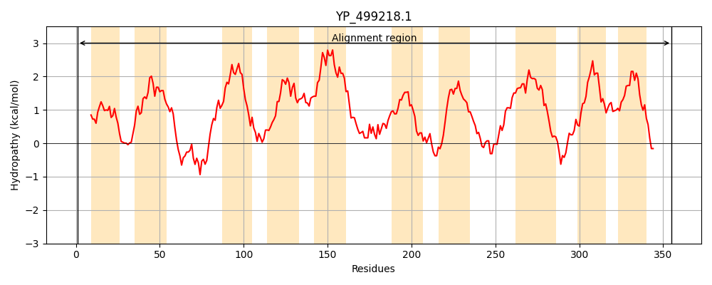
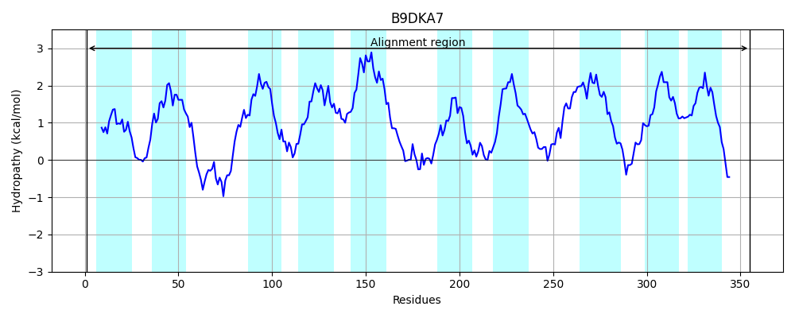
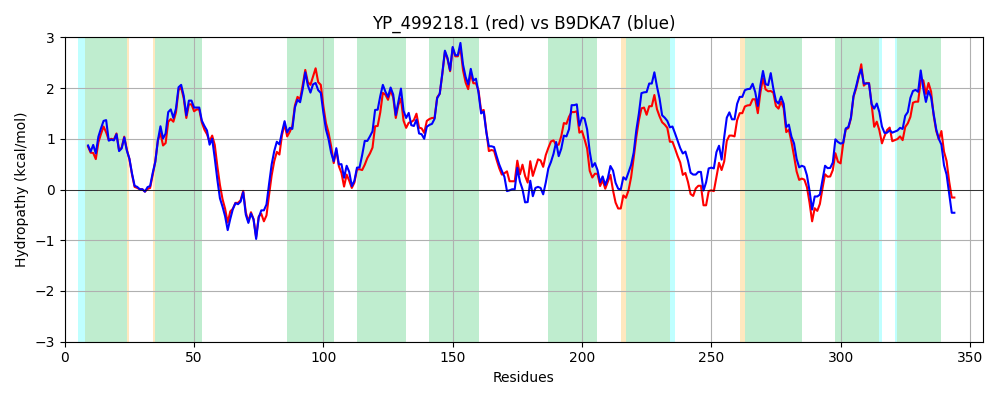

Hit Accession: B9DKA7
Hit TCID: 2.A.120.1.8
Hit Description: gnl|BL_ORD_ID|2155 gnl|TC-DB|B9DKA7|2.A.120.1.8 Putative membrane protein OS=Staphylococcus carnosus (strain TM300) GN=Sca_0299 PE=4 SV=1
Mach Len: 355
e:0.000000
Query TMS Count : 10
Hit TMS Count: 10
TMS-Overlap Score: 9.600000
Predicted Substrates:None
BLAST Alignment:
Score: 1395 , Bit scores: 541 bits, E-value: 0.0e+00, Alignment length: 355, Percentage identity: 73
Query: 1 MMMNKEATKIGFAYVGIVVGAGFSTGQEVMQFFTKYGLWAYLGVIISGFILAFIGRQVAKIGTAFEATNHESTLQYVFGEKFSKVFDYILIFFLFGIAVTMIAGAGATFEESYNIPTWLGALIMTLAIYITLLLDFNKIVRALGIVTPFLIVLVVLIAGVYLFKGHVSLAEVNQVVPEASIWKGIWFGTIYGGLAFSVGFSTIVAIGGDTEKRTVSGAGAMYGGIIYTVLLALINFALQSEYPTIKNASIPTLTLANNIHPLIATVLSVIMLAVMYNTILGLMYSFAARFTEPYSKNYHIFIIIMMVAGYLLSFVGFAELINKLYTIMGYVGLFIVVAVIIKYFKRKNADKKHIA 355
M NKE KIGFAYVG+VVGAGFSTGQEVMQFFT YGL+AY+GV+I+G IL FIGRQVAKIGTAF+A NHESTL Y+FG++F ++ DYIL+FFLFGI+VTMIAGAG+ F ESY IPTWLG+LIM +AIYITLL+DFNKIVRALG+VTPFLIVLV++IAGVYL KG V ++++N VVP+A+ +GIW GTIYGGLAF+VGFSTIVAIGGD +R VSGAGA++GG++YT+LLALI FALQ+EYP IK+A+IPTLTLA+ IHP++ +LS++MLAVMYNTILGL+YSFAARFT PY+K YHI I+IMM+ Y LSFVGF+ LIN LY MGYVGL IV+AV+IKYFKRK +K+HIA
Sbjct: 1 MTFNKETVKIGFAYVGVVVGAGFSTGQEVMQFFTDYGLYAYIGVLIAGLILGFIGRQVAKIGTAFDAENHESTLSYLFGKQFGRIIDYILVFFLFGISVTMIAGAGSAFHESYGIPTWLGSLIMVIAIYITLLMDFNKIVRALGVVTPFLIVLVIVIAGVYLVKGQVPISQINSVVPDANPIQGIWRGTIYGGLAFAVGFSTIVAIGGDASRRKVSGAGALFGGVVYTILLALITFALQTEYPAIKDAAIPTLTLAHGIHPIVTILLSIVMLAVMYNTILGLLYSFAARFTTPYTKKYHILIVIMMLVAYGLSFVGFSSLINFLYPAMGYVGLLIVIAVLIKYFKRKKENKEHIA 355 | Protein Hydropathy Plots: |
|---|
|  |  |
Pairwise Alignment-Hydropathy Plot:
|
|---|
|  |